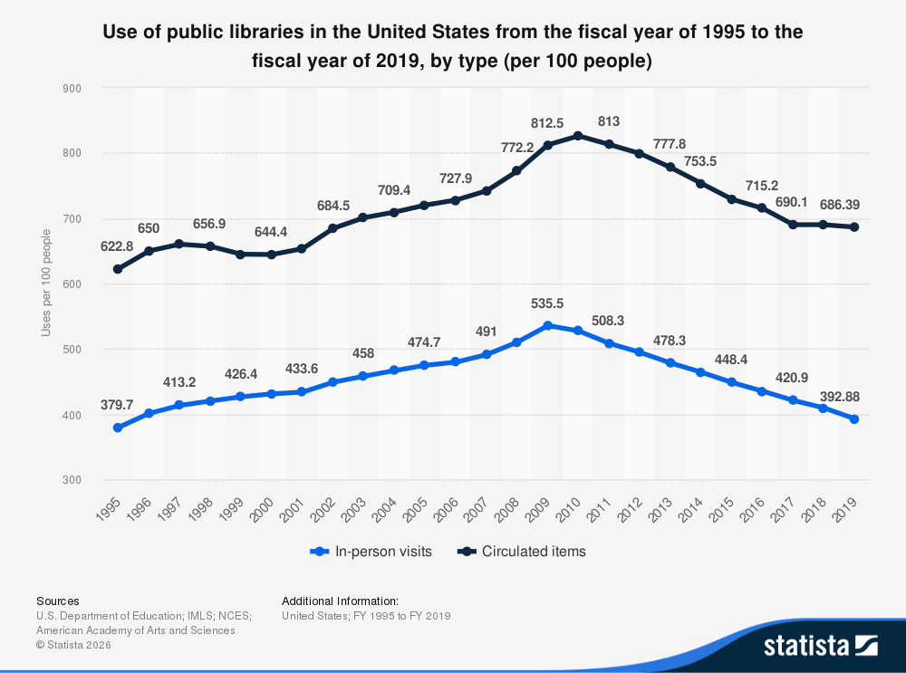
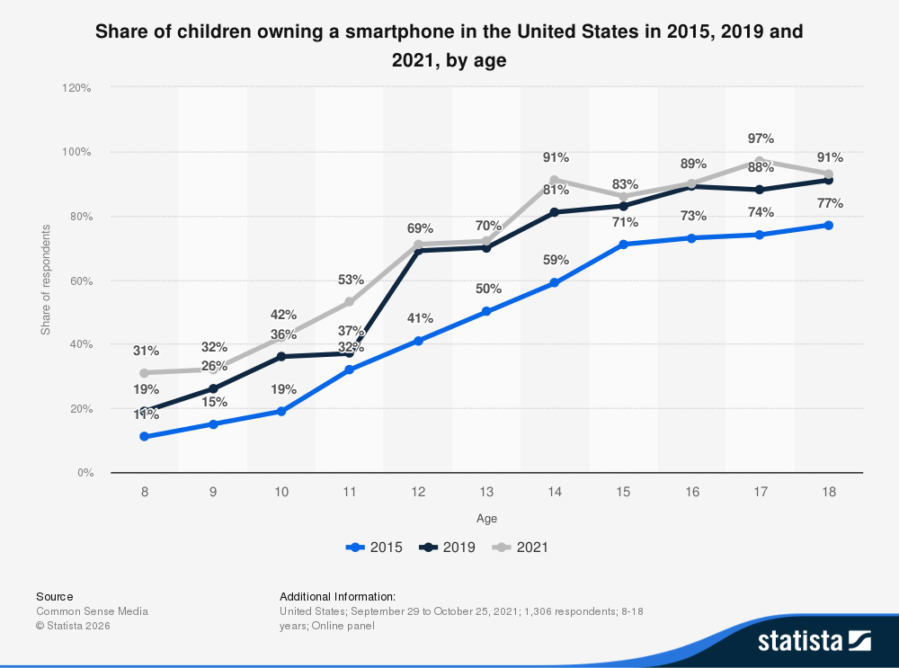

A student-ran initative to help kids 7-12 learn how to code in libraries. Locations at Berkeley (Claremont Branch) and Oakland Public Library (Rockridge Branch)
Libraries are integral center of learning our society. Statistics show that libraries increase the time parents spend reading to or with their children by 14 minutes per day. During a time of decreasing literacy skills in early childhood it is important the we maintain and support institutions that provide free access to learning. Not only do libraries enrich reading skills, but they have been proven to increase 13 metrics of early development. In Philadelphia, a city with declining test scores, The Urban Literacy Council found year-after-year gains in development in the following metrics after going to a library:
Montecassino School says the following about the effects of libraires in early childhood,
"Picture this: Your child picks a book. Maybe it's about dinosaurs, space, or a fairy tale. By diving into different books, they're not just learning new words; they're building their own vocabulary castle. It's like each book is a new brick in their language fortress. And it's not just about reading silently. When kids join library activities, they get to discuss what they've read. It's like the difference between cooking alone and having a cook-off with friends. Sharing stories and thoughts lights up parts of their brains that solo reading doesn't touch."


As shown on the graphs, as library visits have decreased, smartpghone usage has increased. This suggests a strong negative correlation between tech and libraries.Through this initative, I hope to connect my interests in both ELA and Tech, to help support these fundamental institutions.